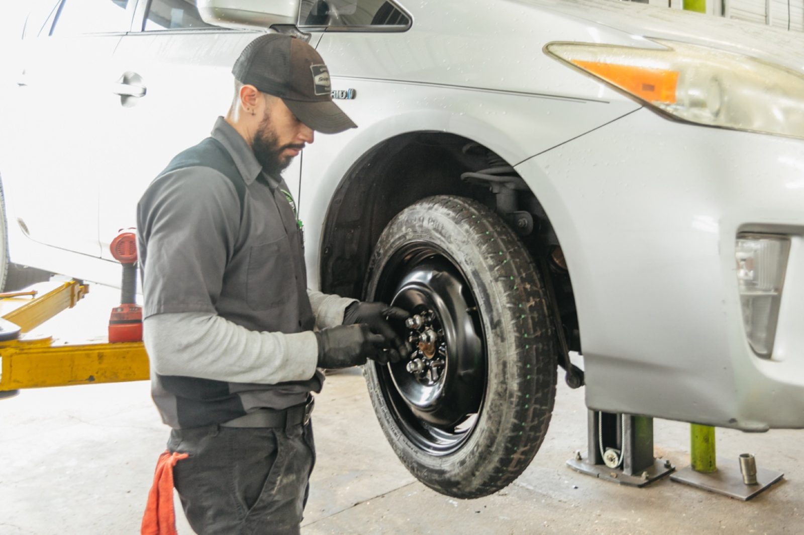
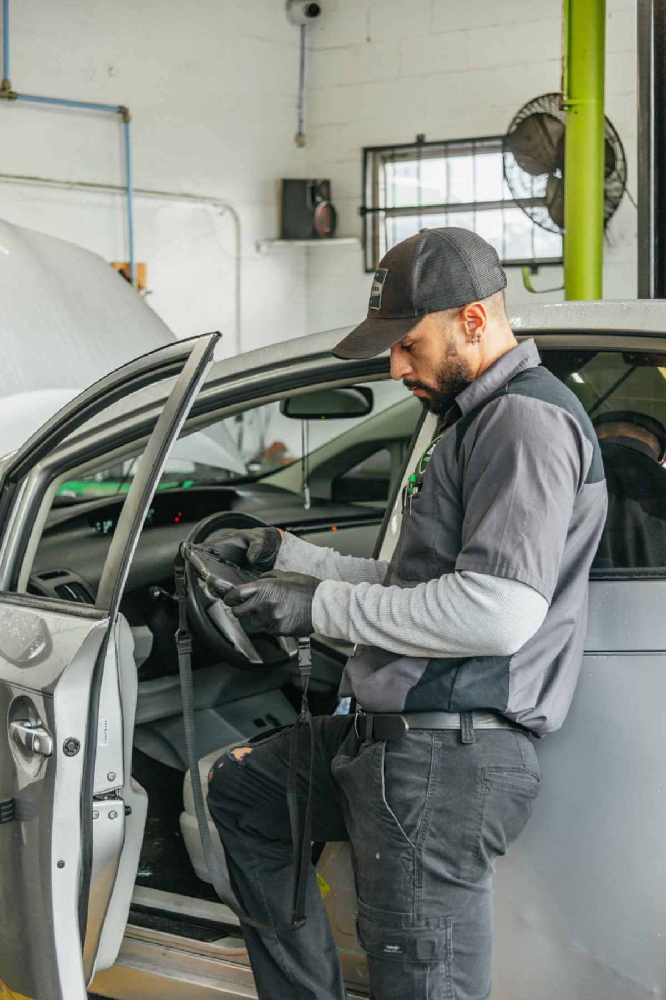

01
Diagnostics
Check engine light on? The digital inspection shows what we found, with photos.
- Check engine light
- Drivability
- Electrical systems
The Burg · Gulfport
The Burg Automotive serves Gulfport from St. Petersburg.
The Burg Automotive is based in St. Petersburg and works with customers from Gulfport. Call (727) 527-9622 to ask about timing and directions.
What we work on
From check engine lights to brakes to fleet service.
01
Check engine light on? The digital inspection shows what we found, with photos.

02
Brake service, tire installation, rotation, balancing and wheel alignment.

03
Oil changes, fluids, belts and scheduled maintenance, with a digital inspection.
04
Engine repairs, transmission service, alternators and batteries.
05
Shocks, struts, steering, suspension and exhaust work.
06
Maintenance schedules built around your vehicles and the work they do.
In their words
4.9
497 Google reviews
I visited this auto repair shop when my car started feeling rough during acceleration and didn’t respond as smoothly as before. I explained the issue, and the staff listened carefully before starting a full inspection. They checked the engine, air intake, and fuel system step by step without rushing. After a proper diagnosis, they found a clogged air filter and minor fuel flow restriction causing the problem.
Went to the burg recently and the customer service was fantastic, they do not cut corners nor do they leave anything unexplained when it comes to inspections. They are doing everything they can for the customer and will work with your schedule. Excellent service, I recommend anyone in the Bay Area check them out.
First mechanic I have tried out Maude if the dealership and I am a forever customer everything was so easy. The staff was amazing honest and so helpful! I am so glad they have before and after hour pick up ! So convenient everything I needed thank you so much, The Burg